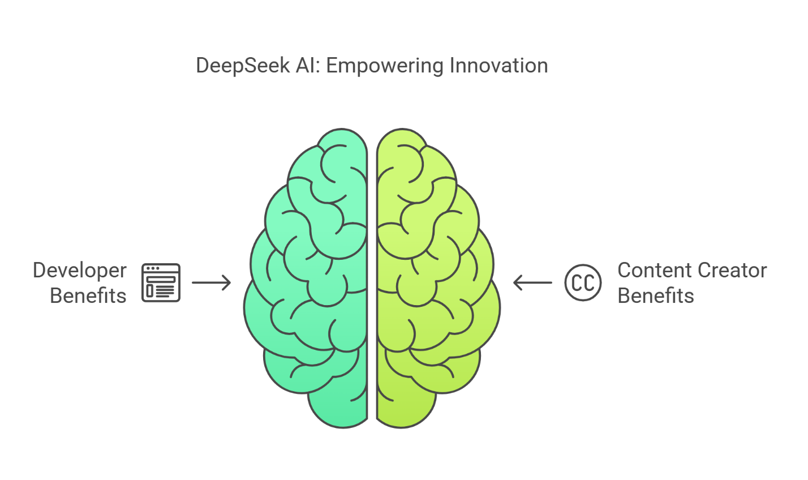
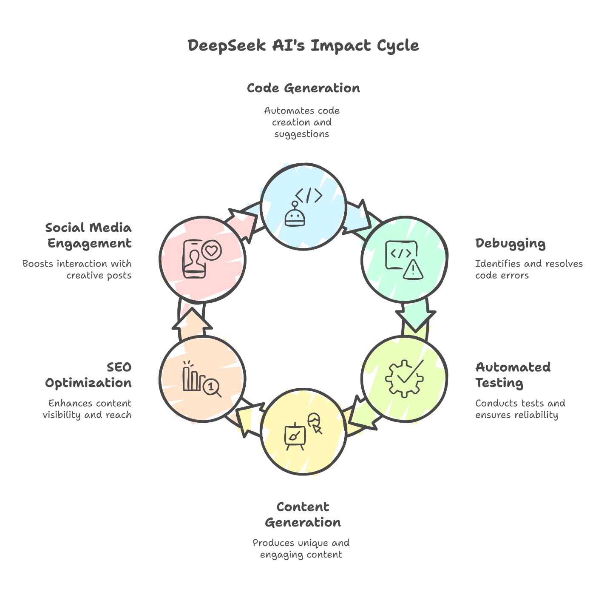

DeepSeek AI: Your Secret Weapon for Developers and Content Creators
In the world of artificial intelligence, DeepSeek AI is a game-changer that helps developers and content creators in big ways. With its powerful natural language processing (NLP) and deep learning algorithms, DeepSeek AI boosts productivity, creativity, and efficiency across the board. Let’s dive into how it benefits both developers and content creators, and how it can help streamline your workflows and make amazing things happen.
DeepSeek AI for Developers
1. Code Generation and Assistance
Developers often spend a lot of time writing, debugging, and optimizing code. DeepSeek AI is here to save the day! It: - Automatically generates code snippets for various programming languages. - Provides real-time suggestions to make your code faster and more readable. - Helps you understand libraries and frameworks faster, like a coding buddy.
2. Debugging and Error Detection
AI-powered debugging has totally changed the game for developers. DeepSeek AI: - Analyzes code and finds errors instantly. - Predicts potential vulnerabilities, keeping your code secure from hackers. - Optimizes performance by suggesting better algorithms and structures.
3. Automated Testing
Software testing can be time-consuming, but DeepSeek AI makes it easier! It: - Generates test cases automatically, reducing manual work. - Uses machine learning to detect bugs and improve software reliability. - Enhances continuous integration and deployment (CI/CD) processes.
4. Natural Language Processing (NLP) for Developers
Developers working with NLP applications can use DeepSeek AI for: - Building AI-powered chatbots and virtual assistants. - Automating text analysis, including sentiment detection and summarization. - Improving search algorithms for better user experiences.

DeepSeek AI for Content Creators
1. Automated Content Generation
Content creators often struggle with generating new ideas. DeepSeek AI can help by: - Generating high-quality articles, blog posts, and product descriptions. - Suggesting trending topics based on search engine insights. - Adding unique ideas and phrasing to make content more engaging.
2. SEO Optimization
For digital marketers and bloggers, ranking higher on search engines is crucial. DeepSeek AI helps by: - Identifying top-performing keywords to improve visibility. - Analyzing competitor content and suggesting improvements. - Generating meta descriptions and tags for better SEO.
3. Social Media Content Creation
Engaging audiences on social media requires frequent content creation. DeepSeek AI can help by: - Generating catchy captions and hashtags to boost interaction. - Scheduling posts for consistent engagement. - Creating AI-powered images and videos for better visual appeal.
4. Editing and Proofreading
DeepSeek AI acts as a content superhero by: - Checking grammar, spelling, and style to improve readability. - Detecting plagiarism, ensuring original content. - Enhancing sentence structure for better clarity and flow.
Conclusion
DeepSeek AI is revolutionizing the way developers and content creators work. It automates tedious tasks, enhances creativity, and streamlines workflows. Whether you're a developer optimizing code or a content creator looking to engage audiences, DeepSeek AI is your ultimate tool for success. As AI continues to evolve, integrating DeepSeek AI into your work will keep you ahead in the digital world.
Frequently Asked Questions (FAQs) About DeepSeek AI
1. What is DeepSeek AI and how does it work?
DeepSeek AI is an advanced AI-powered tool that helps developers and content creators with tasks like code generation, debugging, content writing, and SEO optimization. It uses natural language processing (NLP) and deep learning algorithms to automate processes and improve efficiency.
2. Can DeepSeek AI generate code for any programming language?
Yes, DeepSeek AI supports multiple programming languages and can generate code snippets, suggest improvements, and assist with debugging. It helps developers write cleaner and more efficient code faster.
3. How does DeepSeek AI assist with SEO optimization?
DeepSeek AI analyzes trending keywords, suggests content improvements, and generates meta descriptions and tags. It helps content rank higher on search engines by ensuring that the right SEO strategies are used.
4. Is DeepSeek AI useful for social media content creation?
Absolutely! DeepSeek AI can generate engaging captions, hashtags, and even AI-powered images and videos. It also helps with post scheduling to maintain consistent content distribution across platforms.
5. Can DeepSeek AI detect and fix grammar mistakes?
Yes, DeepSeek AI acts as a grammar checker, style editor, and plagiarism detector. It ensures that written content is error-free, well-structured, and unique.
6. Is DeepSeek AI suitable for both beginners and professionals?
Yes! DeepSeek AI is designed to assist both beginners and experts. Whether you're learning to code or an experienced content creator looking for efficiency, DeepSeek AI provides powerful tools to enhance productivity.